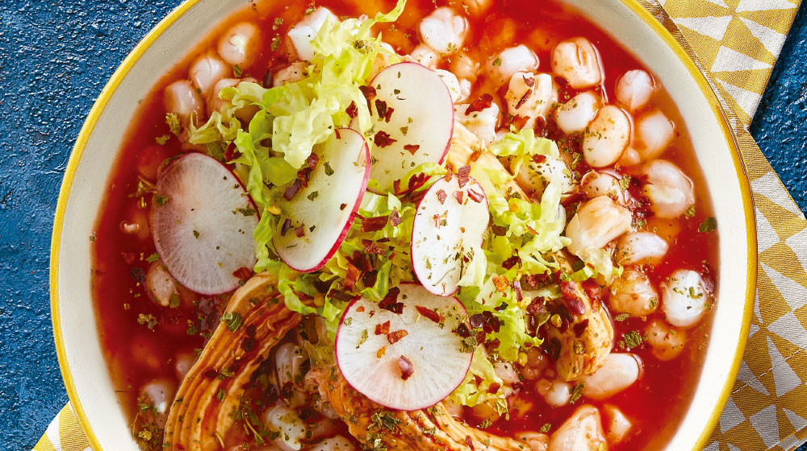

POZOLE

Autor
Gerson Giovanni
Porciones
¿Delicioso?
Sí
HISTORIA
El pozole es un plato tradicional mexicano que se remonta a la época prehispánica. Los mexicas lo preparaban entre los años 1325 y 1521 como un platillo ceremonial para festividades religiosas. El pozole se elaboraba con fines religiosos y se utilizaba carne humana. La mejor pieza se ofrecía al tlatoani (gobernante) para expresar agradecimiento y respeto.
Notas:
- El pozole antiguo se preparaba tradicionalmente en un horno de tierra.
- Se podían agregar otros ingredientes al pozole, como frijoles, calabaza o jitomates.
- El pozole se servía con tortillas de maíz calientes.
INGREDIENTES
- Maíz cacahuazintle - 1 kg
- Carne de venado o guajolote - 1 kg
- Epazote - 1 manojo
- Chiles secos - 4 piezas
- Lechuga - 1 pieza
- Rábanos - 1 manojo
- Tortillas - 15-20 piezas
PROCEDIMIENTO
- Paso 1
- Lavar el maíz y colocarlo en una olla con 3 litros de agua y 100 gramos de cal, Dejar reposar durante 12 horas, hasta que el maíz se ablande y la piel se desprenda fácilmente, Frotar el maíz con las manos para eliminar la piel y el germen y Lavar el maíz nixtamalizado con agua limpia.
- Paso 2
- Colocar el maíz nixtamalizado en una olla con 4 litros de agua y Cocinar a fuego lento durante 3-4 horas, hasta que el maíz esté suave.
- Paso 3
- Cortar la carne en trozos pequeños, Saltear la carne en una sartén con aceite caliente hasta que esté dorada, Agregar agua a la sartén y cocinar la carne a fuego lento durante 1-2 horas, hasta que esté cocida.
- Paso 4
- Agregar la carne cocida al maíz cocido y Dejar cocinar juntos durante unos minutos.
- Paso 5
- Agregar el epazote y los chiles secos al gusto y Dejar cocinar unos minutos más para que los sabores se integren.
- Paso 6
- Servir el pozole con tortillas, lechuga y rábanos
Fin.
Y listo, tienes tu rico platillo, solo queda ponerlo en un plato y disfrutar de la deliciosa comida mexicana a la mexicana. Muchas gracias por llegar hasta aquí, recuerda que hay mas platillos por probar y recuerda soplarle a tu comida, podría estar caliente.